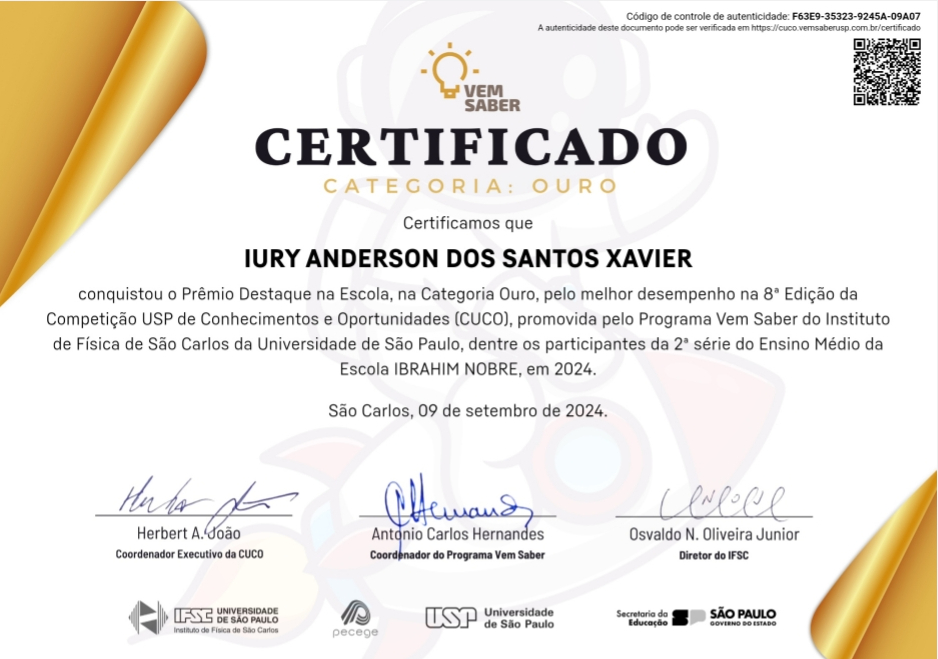

Minhas informções

Conquistas e Certificados
Tenho muito orgulho de já ter conquistado algumas certificações importantes que ampliaram minha visão e me deram mais preparo para o mercado: Certificado em Negócios Internacionais pela USP, onde aprendi conceitos valiosos sobre empreendedorismo e relações globais. Certificado em Audiovisual pelo CEAP, que me proporcionou uma base sólida em produção de imagem e som, essenciais para o mundo criativo em que atuo.